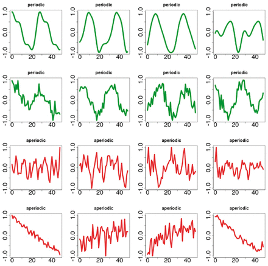

Resume!
Ty Tien-Yu Huang
Currently a graduate student at The University of Texas at Austin. Have a strong interest in data exploration and knowledge discovery in databases, with experiences in business analytics, scientific computing, bioinformatics, and machine learning applications.

Technical Skills
Technical Languages : Python, R, Java, C++, SQL, JavaScript, HTML, CSS, PHP, Unix Shell
Tools and Utilities: Bash, Gawk, Tableau, SAS, WinBUGS, Git, LaTeX, Weka, Keras, TensorFlow, MATLAB, MongoDB, OpenMP, MPI, DecisionTools Suite
Past Projects
Supervised and Unsupervised Learning in Time Series Profiling
Adopted unsupervised learning algorithms such as K-means, Hierarchical clustering, GMM, DBSCAN to find potential circadian candidates in gene expression profile datasets. Based on the results and synthetic periodic signals, utilized supervised learning algorithms such as ARIMAX, deep learning to estimate periodic characteristics and to forecast functional expression.

Gene expression profile analysis
Performed comparative transcriptome analysis among parental inbred and crosses to study the role of dominance gene expression in heterosis in maize.
NOSQL Distributed Machine Learning Package
Worked on the distributed machine learning package, including implementation of linear regression, logistic regression, and bayesian learning.
Apache Hadoop Data Exploration and Discovery
Implemented the Apache Mahout machine learning library to generate co-occurance and similarity recommendation.
Used R to deploy the MapReduce/YARN programming framework to process large amounts of data on Hadoop clusters
Circadian Site Visit it! ( dynamic features not working due to static website host )
A circadian pattern discovery website. Its main purpose is to assist scientists working on circadian epigenomic infrastructure
in exploring underlying genomic pattern and expression phase.
Circadian site was created from scratch using HTML/Javascript (with the help of jQuery), PHP, and MySQL. PHP is used
server-side to provide access to the MySQL server. jQuery helps with sending Ajax requests to the server to fetch and write
information to the database.
Design and Simulation of Data Aggregation & Fitting Algorithm
Designed and implemented data aggregation and fitting algorithm based on Least Squares Support Vector Machine.
Simulation and verification were confirmed in MATLAB, with the key parameters optimized.
Yelp Dataset Challenge
Developing a recommendation system to recommend restaurants and travel cities by using data mining techniques.
Data mining tools such as R , WEKA, and KNIME are adopted to generate pipeline for restaurant classification,
restaurant recommendation, and review-rating analysis based on the NoSQL data from MongoDB.
Please contact me if you are interested in any sort of collaboration!